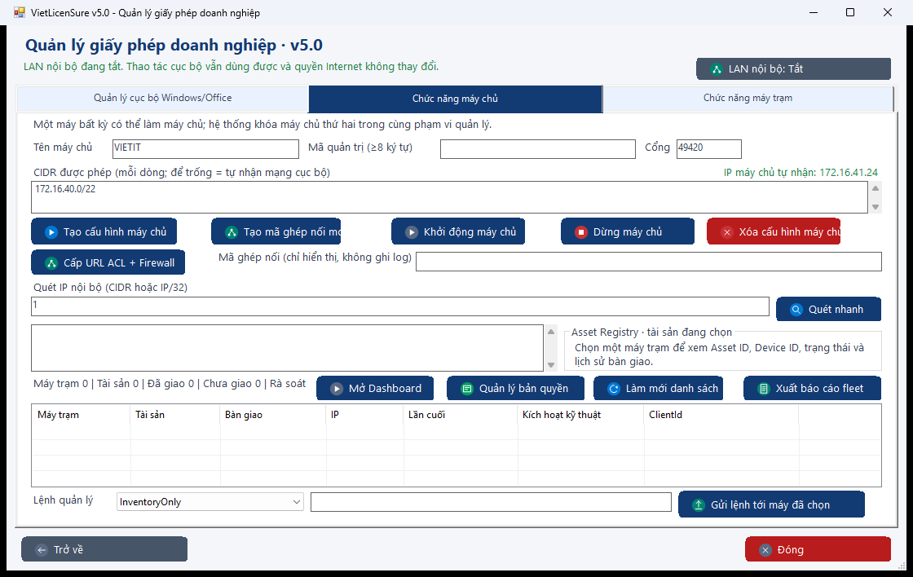
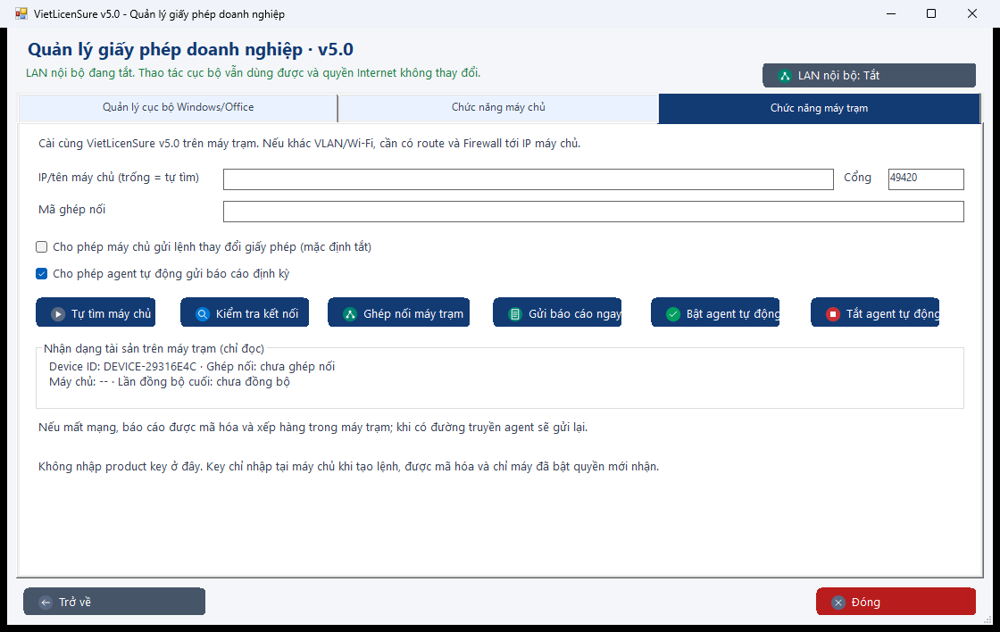
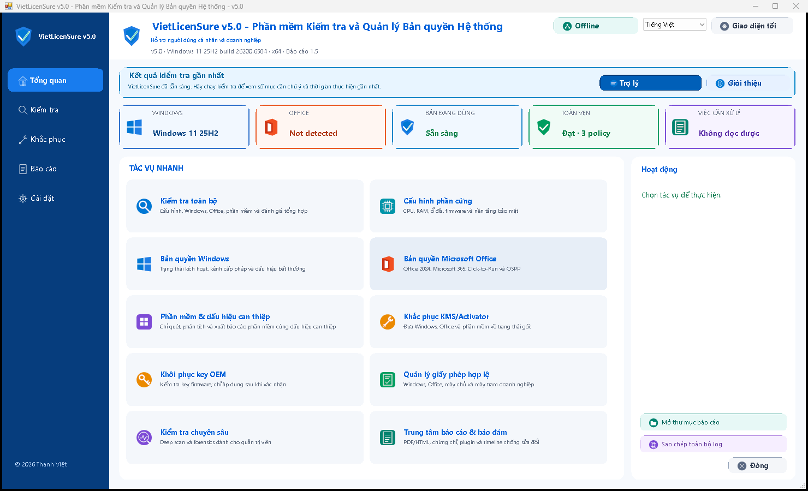
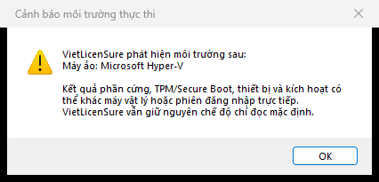

Windows 11 26H2 · PASS
Tổng quan và catalog hiện hành
Build 26300 được nhận diện đúng là Windows 11 26H2; các tác vụ kiểm tra và báo cáo vẫn giữ Offline mặc định.
Các ảnh thật bên dưới gắn với đúng EXE hiện hành, gồm UI trên Windows 11 26H2 và ca VM Offline trên Windows 11 25H2. Dữ liệu nhận dạng được loại bỏ; hình Central Dashboard được ghi rõ là minh họa bố cục.
Build 26300 được nhận diện đúng là Windows 11 26H2; các tác vụ kiểm tra và báo cáo vẫn giữ Offline mặc định.

Tab Máy chủ hiển thị trực tiếp panel tài sản đang chọn, số liệu bàn giao và các cột Tài sản/Bàn giao gắn với máy trạm.

Tab Máy trạm hiển thị Device ID rút gọn, trạng thái ghép nối, máy chủ và lần đồng bộ cuối mà không thu thập định danh phần cứng thô.

Ảnh từ ca smoke artifact-bound của đúng EXE hiện hành: token Medium, Offline, giao diện VI, policy không đổi và không còn tiến trình sau khi đóng.

Công cụ cảnh báo khi môi trường chạy cần được xem xét; người dùng có thể dừng thay vì tự động bỏ qua chính sách hệ thống.
| Máy | Trạng thái | Lần cuối |
|---|---|---|
| WS-01 | Online | 2 phút |
| WS-07 | Stale | 8 giờ |
| WS-12 | Offline | 2 ngày |
Theo dõi Online/Stale/Offline, lần báo cáo cuối, License Compliance và cảnh báo; không điều khiển máy trạm.